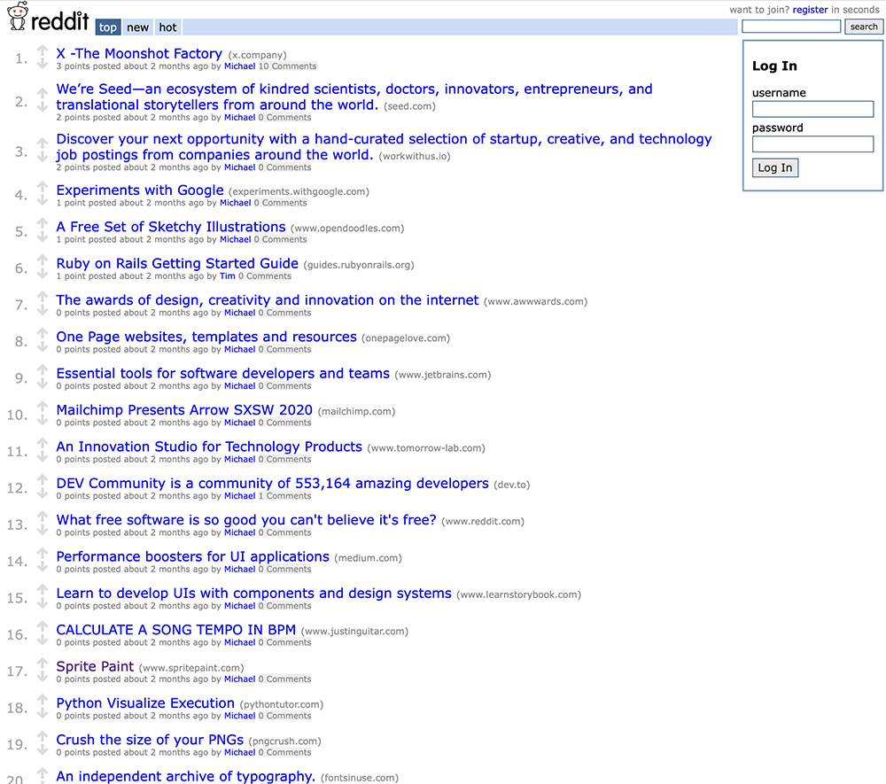

In 2012, my architectural signage manager was surprised but understanding when I told him I was quitting. I wanted to do something important. All my life I've loved visual art and loved to learn about new technology, but graphic design did not fulfill me. I spent the next 8 years working in a school with emotionally disturbed children. Working with these students is not easy, but the challenge and the difference I was making in their lives drove me. I missed making things, so I used programming as an outlet after work. Six months ago, I met and started to work with a software development mentor to fill my knowledge gaps. That knowledge was put to practice creating projects. I discovered the passion that has brought everything together, my Ikigai.
Web Developer
During college I took an entry level programming class. In this class I saw that I could use code as a creative expression. For the past 8 years since, I have been using programming as a creative outlet after work. I love being able to use my creative skills along with my technical skills to make something that others can use. I specially love to know that I can make something that can help others. In the past 6 months, I have been working with Tim, my mentor. He has helped me with my Computer Science skills and has guided me to use them in projects. I have created projects using JavaScript and Ruby on Rails.
Designer
All of my life visual art has been my passion. My interest in Art, Design, and Animation led me to want to pursue a career in graphic design. I went to the City University of New York and achieved a Bachelor’s degree in Computer Graphics and Design. Graphic design was fun and interesting but I wanted more of a creative challenge. I also wanted to make a social impact.
Educator
In my search for a meaningful career, I decided to pursue a career as a Teacher's Assistant. For the last 9 years, I have worked alongside teachers and other assistants to ensure the best possible education for my special needs students. My students are all in elementary school and have been clinically diagnosed as Emotionally Disturbed; these children have all been previously removed from other schools due to behavior issues. They have been diagnosed with conditions ranging from attention-deficit/hyperactivity disorder(ADHD), oppositional defiant disorder (ODD), and autism (ASD).
The thought of working with “rough” students might turn off some, my students actually inspire me. Seeing them overcome incredible mental and emotional hurdles as they develop as people has kept me dedicated to my work for the last 8 years. They almost inspired me to become a teacher. However, despite education being a decent fit for me, it wasn’t perfect. I have always felt like being involved with education meant that I had to leave behind my artistic passion for creating things in order to be of service to others.
Bringing it all together
Although my job as a teacher's assistant does make me feel like I am contributing to society, I have come to understand that I need to find a career that will allow me not only to exercise my passion for helping society but also exercise my other passions for creativity and growth. I now realize that a career in programming would allow me to find the challenge, inspiration, creativity, and sense of accomplishment that I desperately crave all while fulfilling my deepest desire: to help others.

Micro Reddit
Ruby on Rails, jQuery, Sass
Did you love the old Reddit design ?
I brought it back to life!